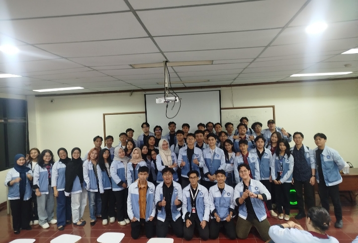
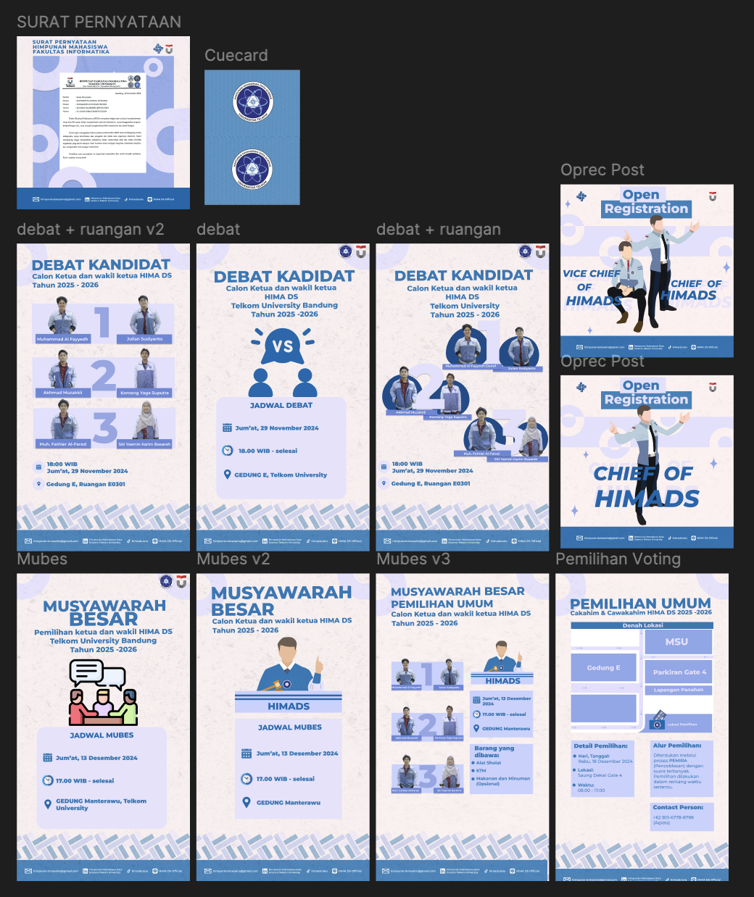

Photo caption: Group photo of Data Science Student Association (i was the one taking photo).
[WRITER'S NOTE] This was a long one since i've been involved in the Student Association of Data Science program and their shenanigans for more or less 2 years. Throughout those years, i split time between multiple roles: keeping and supervise programs on track as Student Representative Body or we often call it BPM (Badan Perwakilan Mahasiswa), Event organizer of multiple internal events, and mentoring newer students in programming.
As BPM, my responsibility is to supervise ongoing projects within the Data Science Association, ensuring that each program meets faculty standards and is carried out properly while minimizing potential issues. I also contributed to drafting and revising the Association's Articles of Association and Bylaws (AD-ART), which act as the organization's highest law documents and establish the principles, rules, and guidelines that every members and future programs needed to follow. Additionally, i also design social media poster posts for certain events.
Other than that, i also take part as study group mentor for multiple courses. Some of the main learning materials I taught included fundamental programming concepts and languages such as Golang and Python, as well as Data Structures and Algorithms.

Photo caption: Some of my design during my work as BPM.